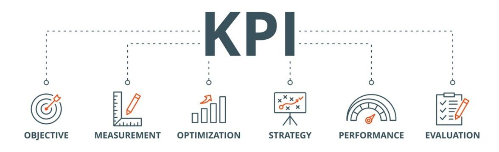

KPIs, or Key Performance Indicators, are measurable values that organizations use to track and evaluate their progress towards achieving specific business objectives. By using KPIs, companies can get a clear picture of their performance, identify areas for improvement, and make data-driven decisions. In this article, we will explore 50 types of KPIs across various business functions.
Table of Contents
- Finance and Accounting
- HR
- Operations
- Production
- Inventory
- Manufacturing
- Shipping
- Warehouse
- Supply Chain
- Customer Service
- Product Development

Finance and Accounting
- Revenue growth rate: This KPI measures the percentage increase in revenue over a specific period. For example, if a company's revenue increased from $1 million to $1.5 million over a year, the revenue growth rate is 50%.
- Gross profit margin: This KPI measures the percentage of revenue that remains after deducting the cost of goods sold. For example, if a company generates $100,000 in revenue and the cost of goods sold is $70,000, the gross profit margin is 30%.
- Debt to equity ratio: This KPI measures the amount of debt a company has relative to its equity. For example, if a company has $500,000 in debt and $1 million in equity, the debt to equity ratio is 0.5.
- Return on Investment (ROI): This KPI measures the return on investment for a particular project or initiative. For example, if a company invests $100,000 in a marketing campaign and generates $150,000 in revenue, the ROI is 50%.
- Days sales outstanding (DSO): This KPI measures the average number of days it takes for a company to collect payment from customers. For example, if a company has $100,000 in accounts receivable and collects $20,000 per month, the DSO is 5 months.
HR
- Employee turnover rate: This KPI measures the percentage of employees who leave a company over a specific period. For example, if a company has 100 employees and 10 leave in a year, the employee turnover rate is 10%.
- Employee engagement: This KPI measures how engaged employees are with their work and the company. For example, if a company conducts an employee survey and finds that 70% of employees are engaged, the employee engagement rate is 70%.
- Time to hire: This KPI measures the time it takes for a company to fill a job vacancy. For example, if it takes a company 30 days to fill a job vacancy, the time to hire is 30 days.
- Training hours per employee: This KPI measures the number of hours of training that employees receive. For example, if a company provides 20 hours of training per employee per year, the training hours per employee is 20.
- Absenteeism rate: This KPI measures the percentage of employees who are absent from work over a specific period. For example, if a company has 100 employees and 5 are absent on a given day, the absenteeism rate is 5%.
Operations
- Cycle time: This KPI measures the time it takes for a company to complete a process or task. For example, if it takes a company 10 days to manufacture a product, the cycle time is 10 days.
- On-time delivery: This KPI measures the percentage of orders that are delivered on time. For example, if a company delivers 90 out of 100 orders on time, the on-time delivery rate is 90%.
- Capacity utilization: This KPI measures the percentage of a company's production capacity that is being used. For example, if a company has a production capacity of 1,000 units per month and produces 800 units, the capacity utilization rate is 80%.
- Quality index: This KPI measures the quality of products or services produced by a company. For example, if a company produces 1,000 products and 10 of them are defective, the quality index is 99%.
- Customer satisfaction: This KPI measures how satisfied customers are with a company's products or services. For example, if a company conducts a customer survey and finds that 80% of customers are satisfied, the customer satisfaction rate is 80%.
Production
- Production yield: This KPI measures the percentage of usable products produced in relation to the total number of products manufactured. For example, if a company manufactures 1,000 products and 900 of them are usable, the production yield is 90%.
- Downtime: This KPI measures the amount of time that production is halted due to equipment failure or other issues. For example, if a production line is down for 2 hours due to equipment failure, the downtime is 2 hours.
- Production rate: This KPI measures the number of units produced per hour or per day. For example, if a production line produces 100 units per hour, the production rate is 100 units per hour.
- Scrap rate: This KPI measures the percentage of raw materials that are wasted during the production process. For example, if a company uses 1,000 pounds of raw material and 100 pounds are wasted, the scrap rate is 10%.
- Production cost per unit: This KPI measures the cost of producing one unit of a product. For example, if a company spends $10,000 to produce 1,000 units, the production cost per unit is $10.
Inventory
- Inventory turnover: This KPI measures the number of times inventory is sold and replaced over a specific period. For example, if a company sells $1 million of inventory in a year and has $100,000 of inventory on hand, the inventory turnover is 10.
- Stockout rate: This KPI measures the percentage of time that inventory is out of stock. For example, if a company runs out of stock on a particular item for 10% of the year, the stockout rate is 10%.
- Days inventory outstanding (DIO): This KPI measures the average number of days that inventory is held before being sold. For example, if a company has $100,000 of inventory and sells $10,000 per month, the DIO is 10 months.
- Carrying cost: This KPI measures the cost of holding inventory, including storage, handling, and insurance costs. For example, if a company spends $5,000 per month to store inventory, the carrying cost is $5,000.
- Obsolete inventory: This KPI measures the value of inventory that is no longer sellable due to expiration, damage, or other issues. For example, if a company has $10,000 of obsolete inventory, the obsolete inventory value is $10,000.
Manufacturing
- Overall equipment effectiveness (OEE): This KPI measures the effectiveness of manufacturing equipment. It takes into account availability, performance, and quality. For example, if a machine is available 90% of the time, performs at 80% of its rated capacity, and produces products with a quality rate of 95%, the OEE is 68.4%.
- Work-in-progress (WIP): This KPI measures the amount of unfinished products in the manufacturing process. For example, if a company has 500 unfinished products, the WIP is 500.
- Time to changeover: This KPI measures the amount of time it takes to switch from producing one product to another. For example, if it takes a company 2 hours to changeover from producing Product A to Product B, the time to changeover is 2 hours.
- Throughput time: This KPI measures the time it takes for a product to move through the entire manufacturing process, from raw materials to finished product. For example, if it takes a company 10 days to produce a product, the throughput time is 10 days.
- Capacity utilization: This KPI measures the percentage of a manufacturing facility's capacity that is being used. For example, if a facility has a capacity of 1,000 units per day and is producing 800 units per day, the capacity utilization rate is 80%.
Shipping
- On-time delivery: This KPI measures the percentage of orders that are delivered on time. For example, if a company delivers 90 out of 100 orders on time, the on-time delivery rate is 90%.
- Lead time: This KPI measures the amount of time it takes for an order to be delivered from the time it is placed. For example, if it takes 5 days for an order to be delivered, the lead time is 5 days.
- Order accuracy: This KPI measures the percentage of orders that are delivered correctly. For example, if 95 out of 100 orders are delivered correctly, the order accuracy rate is 95%.
- Shipping cost per order: This KPI measures the cost of shipping one order. For example, if a company spends $10,000 on shipping and delivers 1,000 orders, the shipping cost per order is $10.
- Damage rate: This KPI measures the percentage of products that are damaged during shipping. For example, if 5 out of 100 products are damaged during shipping, the damage rate is 5%.
Warehouse
- Pick accuracy: This KPI measures the percentage of orders that are picked correctly. For example, if 98 out of 100 orders are picked correctly, the pick accuracy rate is 98%.
- Putaway time: This KPI measures the amount of time it takes to put away incoming inventory. For example, if it takes 2 hours to put away a shipment of inventory, the putaway time is 2 hours.
- Order cycle time: This KPI measures the amount of time it takes to fulfill an order, from the time the order is received to the time it is shipped. For example, if it takes 3 days to fulfill an order, the order cycle time is 3 days.
- Storage capacity utilization: This KPI measures the percentage of warehouse storage capacity that is being used. For example, if a warehouse has a capacity of 10,000 square feet and is currently storing 7,500 square feet of inventory, the storage capacity utilization rate is 75%.
- Inventory accuracy: This KPI measures the percentage of inventory that is accurately accounted for in the warehouse. For example, if 99 out of 100 items in the warehouse are accurately accounted for, the inventory accuracy rate is 99%.
Supply Chain
- Perfect order rate: This KPI measures the percentage of orders that are delivered on time, complete, and error-free. For example, if 80 out of 100 orders are delivered on time, complete, and error-free, the perfect order rate is 80%.
- Cash-to-cash cycle time: This KPI measures the amount of time it takes for a company to convert cash spent on inventory into cash received from customers. For example, if it takes a company 60 days to convert cash spent on inventory into cash received from customers, the cash-to-cash cycle time is 60 days.
- Supplier lead time: This KPI measures the amount of time it takes for a supplier to deliver an order after it has been placed. For example, if it takes a supplier 7 days to deliver an order after it has been placed, the supplier lead time is 7 days.
- Supplier defect rate: This KPI measures the percentage of products received from a supplier that are defective. For example, if 5 out of 100 products received from a supplier are defective, the supplier defect rate is 5%.
- Cost of goods sold (COGS): This KPI measures the direct costs associated with producing and delivering a product. For example, if a company spends $10,000 on direct labor, materials, and shipping to produce and deliver a product, the COGS is $10,000.
Customer Service
- Net promoter score (NPS): This KPI measures customer loyalty by asking customers how likely they are to recommend a company to others. For example, if a company has an NPS of 50, 50% of customers are likely to recommend the company to others.
- Customer satisfaction (CSAT): This KPI measures customer satisfaction with a company's products or services. For example, if a company has a CSAT score of 90%, 90% of customers are satisfied with the company's products or services.
- Customer retention rate: This KPI measures the percentage of customers who continue to do business with a company over time. For example, if a company retains 80 out of 100 customers over a year, the customer retention rate is 80%.
- Average handling time: This KPI measures the average time it takes for a customer service representative to handle a customer inquiry or complaint. For example, if the average handling time is 5 minutes, it takes 5 minutes on average for a customer service representative to handle a customer inquiry or complaint.
- First contact resolution (FCR): This KPI measures the percentage of customer inquiries or complaints that are resolved on the first contact. For example, if 70 out of 100 customer inquiries or complaints are resolved on the first contact, the FCR rate is 70%.
Product Development
- Time to market: This KPI measures the amount of time it takes for a product to go from conception to launch. For example, if it takes 6 months to develop and launch a new product, the time to market is 6 months.
- Concept conversion rate: This KPI measures the percentage of product concepts that are successfully converted into actual products. For example, if 50 out of 100 product concepts are successfully converted into actual products, the concept conversion rate is 50%.
- Product development cost: This KPI measures the total cost of developing a product, including research and development, design, and testing. For example, if it costs $500,000 to develop a new product, the product development cost is $500,000.
- Product quality: This KPI measures the quality of a product based on customer feedback, warranty claims, and other factors. For example, if 95 out of 100 customers rate a product as high quality, the product quality rate is 95%.
- New product revenue: This KPI measures the revenue generated by new products launched within a specific time period. For example, if a company generates $1 million in revenue from new products launched in the past year, the new product revenue is $1 million.
In conclusion, KPIs are essential for measuring the success of any business. By selecting and tracking the right KPIs, companies can gain valuable insights into their operations and make data-driven decisions to improve performance. The 50 KPIs listed above provide a broad range of metrics to track across various functions within a company. It's important to note that not all KPIs will be relevant to every business, and companies should select the KPIs that align with their goals and objectives.
It's also important to establish realistic targets and benchmarks for each KPI to accurately measure performance and progress over time. By regularly monitoring and analyzing KPIs, companies can identify areas for improvement and make informed decisions to drive growth and success.
Overall, KPIs are a powerful tool for businesses of all sizes and industries. Whether you're focused on financial performance, customer satisfaction, or product development, there are a variety of KPIs that can help you track progress and achieve your goals. By implementing a strong KPI tracking and analysis strategy, businesses can gain a competitive edge and position themselves for long-term success.
Read next: Operational Efficiency for Small Businesses: A Practical Guide; What OEE Really Measures: Where Your Production Hours Go; Does the OEE Project Pay Back? Testing a $1M Investment. If you want help putting this into practice, see our Lean Six Sigma training.